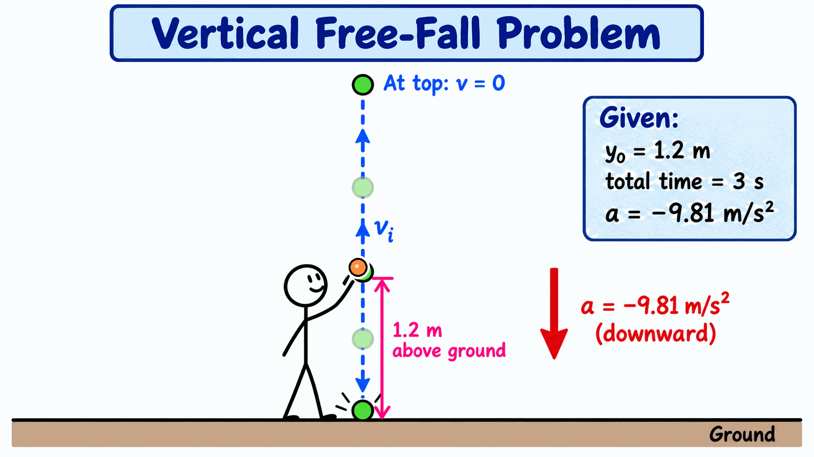
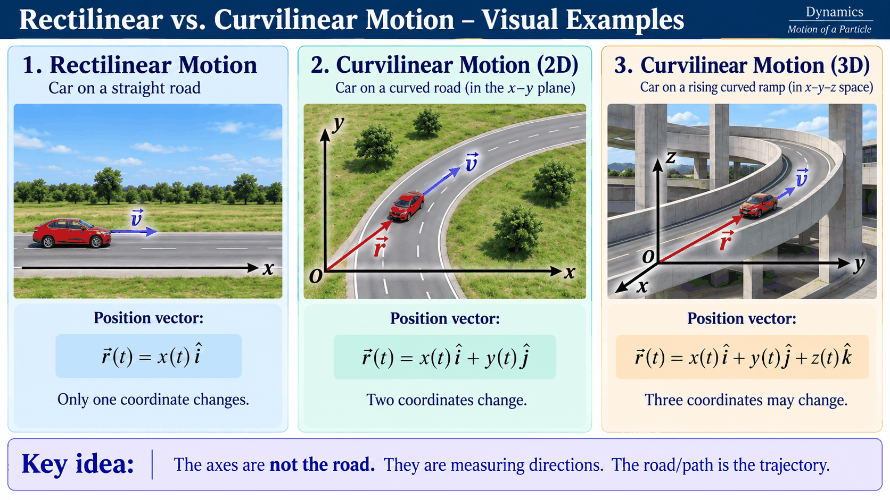
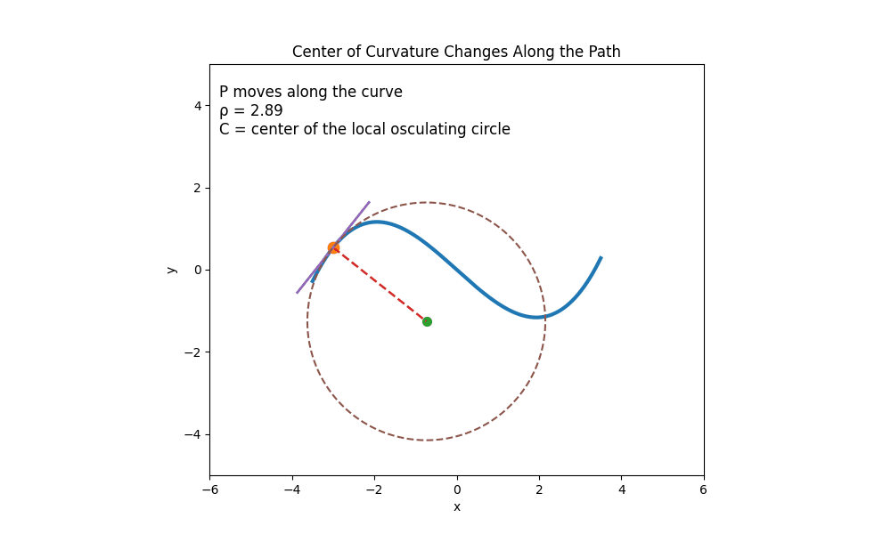
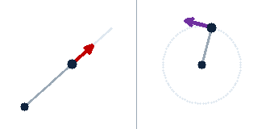
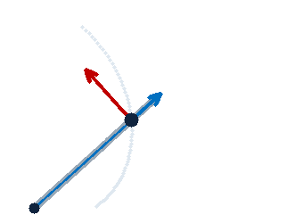
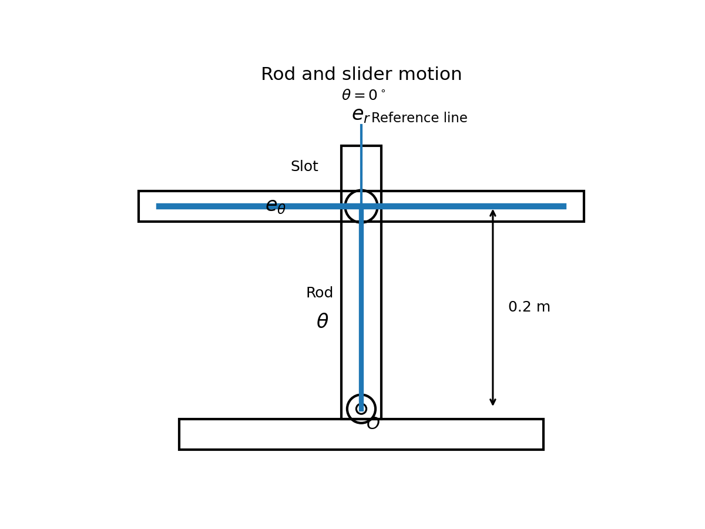

Example — Problem 10 : Free Fall

Exercise — Problem 12: Car Accelerating from Rest
Rectilinear vs. Curvilinear Motion – Visual Examples

Normal–Tangential (n–t) Coordinates

What Each Term Means Physically

Velocity in Polar Coordinates
Acceleration in Polar Coordinates

Acceleration in Polar Coordinates
Exercise — Problem 26: Slotted Guide Motion
